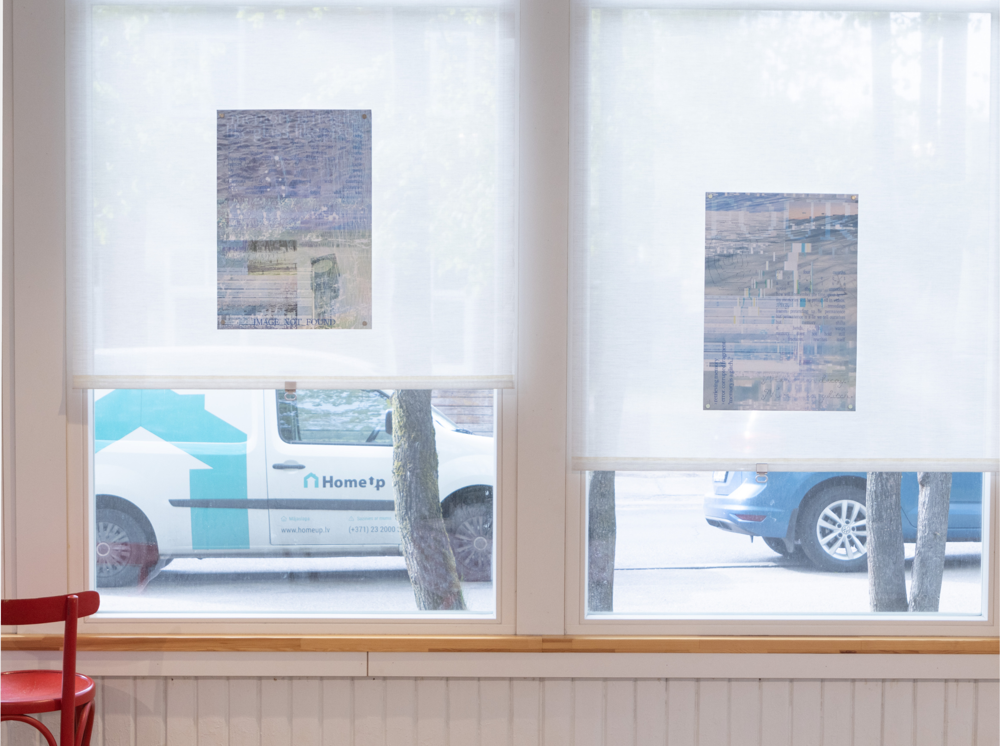
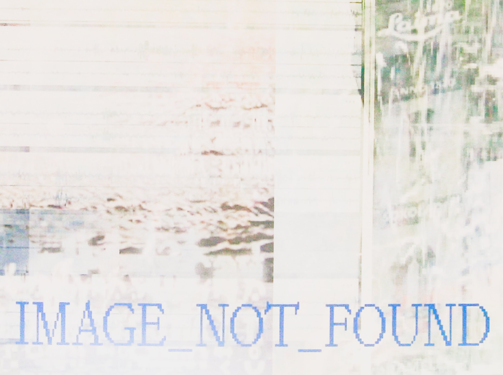

Memory Glitch (FOUR)
This video reflects on the fragility of memory in the digital age. By intuitively collecting
video and audio field recordings and layering them with glitchy visuals, the project draws
a parallel between the unreliability of human memory and the memory of digital files.
Memory, whether human or technological, bends, glitches, and eventually fades.
Visuals were created using TouchDesigner, sound made in Ableton.
꩜ׂ ₊˚⊹⋆°❀⋆࿔*:･°꩜ׂ⋆.࿔*:･



